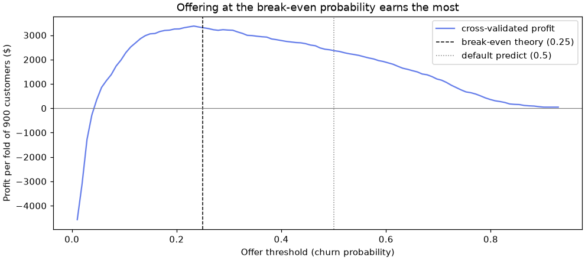
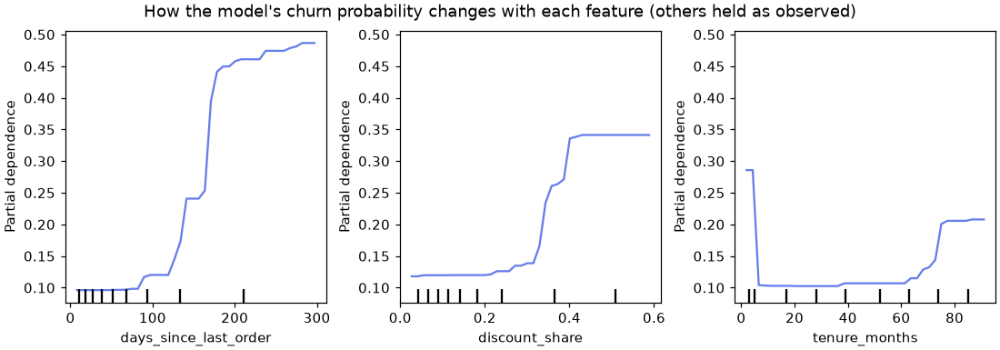

🧭 Lesson 13.1: Case Study: Predicting Churn
Take one real business question from a blank notebook to a recommendation a manager can act on, using everything the course has taught you, in the order a professional would use it.
🎯 Learning Objectives
By the end of this lesson, you will be able to:
- Translate a business goal into a target, a metric and a dollar value for each kind of right and wrong prediction
- Detect a target leak with cross-validation and a crosstab, and remove it before modeling
- Compare and tune models inside a
Pipelinewith cross-validation, keeping the test set locked until one final check - Choose a decision threshold from business costs with
TunedThresholdClassifierCVand report the result in dollars - Explain the model honestly and write a short recommendation for a non-technical stakeholder
In This Lesson
💼 Frame the Problem in Dollars
You have met Pinecrest's churn data in almost every module: as the first fit in Lesson 1.1, as the leak in 1.2, as the profit-driven threshold in 1.4, as the model you explained in Module 7 and served in 12.2. Each time you looked at one piece. Today you do the whole job in one sitting, the way you would on your first week at a real company, and you finish with something no notebook cell can print by itself: a recommendation.
💡 Mental Model: The Expedition Plan
A good mountain guide does not start by choosing boots. They start with the destination and the budget, check the route for hazards, plan a fallback, and only then pack. At the end they report to the people who paid for the trip in plain words: where we got to, what it cost, what we would do differently. A machine-learning project has the same shape. The algorithm is the boots: important, but chosen late, and rarely what the client asks about.
📋 The Brief
Pinecrest's customer-care manager has the retention offer you priced in Lesson 1.4: a personal note and a $10 coupon, $15 per customer once staff time is included. From earlier campaigns she knows roughly what it achieves: an offer that reaches a customer who was about to leave is worth $60 on average (roughly one in four of them stays, and a customer who stays brings about $240 of margin over the next year). She asks: "Who should get the offer, and what will it earn us?"
That is a decision, not a prediction. The model's job is to support the decision, so start by turning her numbers into the value of each kind of outcome, with the same constants as Lesson 1.4:
OFFER_COST = 15 # dollars per customer contacted
CHURNER_VALUE = 60 # expected dollars per real churner contacted
print(f"net gain per churner offered : ${CHURNER_VALUE - OFFER_COST}")
print(f"net cost per non-churner offered : ${OFFER_COST}")
print(f"break-even churn probability : {OFFER_COST / CHURNER_VALUE:.2f}")Output
net gain per churner offered : $45
net cost per non-churner offered : $15
break-even churn probability : 0.25Read the last line carefully, because it settles a question people argue about for hours (Lesson 1.4 met it first). An offer to a customer with churn probability p is worth p × $60 on average and costs $15. It pays off whenever p × 60 > 15, so whenever p > 0.25. Not 0.5, the default that predict uses. If the model's probabilities are trustworthy, the business has already chosen the threshold.
| Outcome | Meaning | Value |
|---|---|---|
| True positive | Offer sent, customer was going to churn | +$45 |
| False positive | Offer sent, customer was staying anyway | −$15 |
| False negative | No offer, customer churns | $0 (a missed chance) |
| True negative | No offer, customer stays | $0 |
So the project needs two kinds of measurement. ROC AUC (Lesson 1.4) judges how well a model ranks customers, independent of any threshold: use it to compare models. Expected profit judges the decision at a threshold: use it to choose the threshold and to report to the manager. Accuracy is not on the list. With 83.5% stayers, it rewards doing nothing.
⚠️ The Numbers Are Assumptions
The $60 is an estimate from earlier campaigns, not a fact. Write the numbers down as named constants at the top, as above, so that anyone can see them and change them. The bonus challenge asks how sure the manager needs to be about them.
🔎 Explore with a Question in Mind
Exploration in a project is not a tour of every column. It answers two questions: is there signal worth modeling, and what shape does it have (which tells you which models to try)?
import numpy as np
import pandas as pd
pd.set_option("display.width", 150)
customers = pd.read_csv("data/customers_churn.csv")
print(customers.shape, f"churn rate {customers['churned'].mean():.1%}")
recency = pd.cut(customers["days_since_last_order"], [-1, 30, 90, 150, 250, 364])
print(customers.groupby(recency, observed=True)["churned"].mean().round(3))Output
(6000, 20) churn rate 16.5%
days_since_last_order
(-1, 30] 0.091
(30, 90] 0.095
(90, 150] 0.152
(150, 250] 0.415
(250, 364] 0.558
Name: churned, dtype: float64Recency matters, but not as a straight line: churn is flat at about 9% for three months, creeps up, then jumps above 40% after about 150 days. A threshold, not a slope. Two more checks:
tickets = customers["support_tickets_12m"].clip(upper=5).rename("tickets (5 = 5+)")
print(customers.pivot_table(index=tickets, columns="app_user", values="churned", aggfunc="mean").round(3))
tenure = pd.cut(customers["tenure_months"], [0, 5, 72, 96])
print(customers.groupby(tenure, observed=True)["churned"].mean().round(3))Output
app_user 0 1
tickets (5 = 5+)
0 0.142 0.120
1 0.204 0.107
2 0.275 0.124
3 0.330 0.116
4 0.455 0.050
5 0.611 0.077
tenure_months
(0, 5] 0.319
(5, 72] 0.092
(72, 96] 0.215
Name: churned, dtype: float64Two more shapes a straight line cannot draw. Support tickets are a strong warning for customers who do not use the app, and nearly meaningless for those who do: an interaction. And tenure is a U-shape: brand-new customers and the very oldest ones churn more than the middle. The conclusion for modeling: try tree ensembles, which find thresholds and interactions on their own, against a logistic regression, which would need hand-made features to see them (Exercise 4).
✂️ Split and Set the Baseline
Split once, at the start, with the course's standard split, and put the test set out of reach. Everything until the section called "Open the Test Set, Once" uses the 4,500 training customers only, through cross-validation.
from sklearn.model_selection import train_test_split
NUMERIC = ["tenure_months", "orders_12m", "spend_12m", "avg_order_value", "days_since_last_order",
"returns_12m", "return_rate", "support_tickets_12m", "discount_share", "app_user", "email_opens_90d"]
CATEGORICAL = ["home_store", "region", "age_group", "loyalty_tier", "preferred_category"]
FEATURES = NUMERIC + CATEGORICAL
train, test = train_test_split(customers, test_size=0.25, stratify=customers["churned"], random_state=42)
as_float = {col: float for col in NUMERIC} # float columns, so the explanation tools work (Lesson 7.1)
X_train, y_train = train[FEATURES].astype(as_float), train["churned"]
X_test, y_test = test[FEATURES].astype(as_float), test["churned"]
print(X_train.shape, X_test.shape, f"train churn {y_train.mean():.3f} test churn {y_test.mean():.3f}")Output
(4500, 16) (1500, 16) train churn 0.165 test churn 0.165Now turn the brief into code: Lesson 1.4's profit function, which scores a set of yes/no offer decisions in dollars, and the two policies that need no model at all.
def campaign_profit(y_true, flagged):
"""Expected profit of contacting every flagged customer."""
y_true, flagged = np.asarray(y_true), np.asarray(flagged)
tp = ((flagged == 1) & (y_true == 1)).sum()
return CHURNER_VALUE * tp - OFFER_COST * flagged.sum()
print("offer to nobody ", campaign_profit(y_train, np.zeros(len(y_train), dtype=int)))
print("offer to everyone", campaign_profit(y_train, np.ones(len(y_train), dtype=int)))Output
offer to nobody 0
offer to everyone -22860These are the two baselines that matter to the manager. Offering to everyone would lose about $23,000 on the 4,500 training customers, because five out of six offers go to people who were staying anyway. Offering to nobody earns nothing. A model is worth having only if it can pick a list that beats $0, and the comparison models below must also beat the DummyClassifier's AUC of 0.5.
🚨 The Leakage Check
You left cancellation_reason out of FEATURES on purpose. On a real project nobody tells you which column is the trap, so check it the way you would check any suspicious column: add it and see what happens. First, a reusable preprocessing builder (Lesson 2.2): impute and scale the numbers, impute and one-hot encode the categories.
from sklearn.compose import ColumnTransformer
from sklearn.pipeline import make_pipeline
from sklearn.impute import SimpleImputer
from sklearn.preprocessing import OneHotEncoder, StandardScaler
from sklearn.linear_model import LogisticRegression
from sklearn.model_selection import StratifiedKFold, cross_val_score
def make_prep(numeric, categorical):
return ColumnTransformer([
("num", make_pipeline(SimpleImputer(strategy="median"), StandardScaler()), numeric),
("cat", make_pipeline(SimpleImputer(strategy="most_frequent"),
OneHotEncoder(handle_unknown="ignore", sparse_output=False)), categorical),
])
cv = StratifiedKFold(n_splits=5, shuffle=True, random_state=42)
with_reason = train.assign(cancellation_reason=train["cancellation_reason"].fillna("none"))
leaky = make_pipeline(make_prep(NUMERIC, CATEGORICAL + ["cancellation_reason"]), LogisticRegression(max_iter=1000))
honest = make_pipeline(make_prep(NUMERIC, CATEGORICAL), LogisticRegression(max_iter=1000))
for name, pipe, data in [("with cancellation_reason", leaky, with_reason), ("without", honest, train)]:
scores = cross_val_score(pipe, data, y_train, cv=cv, scoring="roc_auc")
print(f"{name:25s} CV AUC {scores.mean():.3f}")
print(pd.crosstab(train["cancellation_reason"].notna(), train["churned"]))Output
with cancellation_reason CV AUC 0.937
without CV AUC 0.832
churned 0 1
cancellation_reason
False 3756 278
True 0 466One column lifts the AUC by about 0.1, which in a mature problem like churn is enormous: too good to be true. The crosstab shows why. Every customer with a reason filled in is a churner, and no stayer has one. The reason is recorded when someone cancels, which happens after the June 30 snapshot. On the day you need a prediction, the column is empty for everyone you are trying to save. The model would be brilliant in testing and useless in July.
✅ The Leak Questions, for Any Column
Would I know this value at the moment I make the prediction? Was it recorded before or after the outcome? Does a single feature make the model suddenly excellent? Is the column filled in only for one class? Ask them about every column before modeling, and again whenever a score jumps.
Two other columns were also left out deliberately: customer_id (a label, not a behavior; a model could only memorize it) and signup_date (already captured by tenure_months).
⚖️ Pipelines and Model Comparison
Now compare candidates fairly: the same preprocessing, the same five folds of the training data, the same metric. Because each candidate is a Pipeline, the imputers and the scaler are refitted inside every fold, so no fold's statistics leak into another (Lesson 2.2).
from sklearn.dummy import DummyClassifier
from sklearn.ensemble import RandomForestClassifier, HistGradientBoostingClassifier
candidates = {
"baseline (prior)": DummyClassifier(strategy="prior"),
"logistic regression": LogisticRegression(max_iter=1000),
"random forest": RandomForestClassifier(n_estimators=200, min_samples_leaf=5, random_state=42, n_jobs=-1),
"hist gradient boosting": HistGradientBoostingClassifier(random_state=42),
}
cv_auc = {}
for name, model in candidates.items():
scores = cross_val_score(make_pipeline(make_prep(NUMERIC, CATEGORICAL), model), X_train, y_train, cv=cv, scoring="roc_auc")
cv_auc[name] = scores
print(f"{name:23s} AUC {scores.mean():.3f} +/- {scores.std():.3f}")Output
baseline (prior) AUC 0.500 +/- 0.000
logistic regression AUC 0.832 +/- 0.023
random forest AUC 0.868 +/- 0.020
hist gradient boosting AUC 0.861 +/- 0.013Every real model clears the baseline easily, and the ranking matches what exploration predicted: both tree ensembles beat logistic regression by 0.03 to 0.04 AUC, because, on raw columns, the thresholds and the interaction are invisible to a straight line (Exercise 4 shows how much of that gap hand-made features close, as they did in Lesson 2.3). The forest and the boosting model are within one standard deviation of each other (0.868 vs 0.861, with spreads of 0.013 to 0.020), so the data does not yet say which tree family is better. That is a common and honest outcome.
💡 Why Not Try Twenty Models?
You could add SVMs, k-nearest neighbors, a neural network and a stacking ensemble. On a table of 4,500 customers with clear thresholds and interactions, the tree ensembles are the natural first choice (a logistic regression with hand-made features, as in Lesson 2.3, is the transparent rival), and Module 10 explained why deep learning is rarely the answer for small tabular data. Each extra candidate also costs time and adds one more chance of picking a winner by luck. Choose a short list from what exploration told you.
🎛️ Tune the Winner
Which one to tune? Random forests are famously good with their defaults; there is little to gain by tuning them. Gradient boosting has several settings that control how complex each tree is and how fast it learns, and its defaults are tuned for bigger datasets than 4,500 customers. So it has the most room to improve: tune it with a randomized search (Lesson 6.2), scoring each candidate by cross-validated AUC on the training data. Note the model__ prefix: inside a Pipeline, each setting is addressed as stepname__parameter.
from sklearn.model_selection import RandomizedSearchCV
from sklearn.pipeline import Pipeline
hgb_pipe = Pipeline([("prep", make_prep(NUMERIC, CATEGORICAL)),
("model", HistGradientBoostingClassifier(random_state=42))])
param_distributions = {
"model__learning_rate": [0.03, 0.05, 0.1, 0.2],
"model__max_leaf_nodes": [7, 15, 31],
"model__min_samples_leaf": [20, 40, 80],
"model__l2_regularization": [0.0, 0.1, 1.0],
"model__max_iter": [100, 200, 300],
}
search = RandomizedSearchCV(hgb_pipe, param_distributions, n_iter=10, cv=cv, scoring="roc_auc", random_state=42)
search.fit(X_train, y_train)
print(search.best_params_)
print(f"best CV AUC {search.best_score_:.3f} (defaults: {cv_auc['hist gradient boosting'].mean():.3f})")
best_model = search.best_estimator_Output
{'model__min_samples_leaf': 80, 'model__max_leaf_nodes': 7, 'model__max_iter': 100, 'model__learning_rate': 0.05, 'model__l2_regularization': 0.1}
best CV AUC 0.879 (defaults: 0.861)The search picked the gentlest settings it was offered: a slow learning rate, small trees with at most 7 leaves, and at least 80 customers per leaf. Tuned boosting reaches 0.879, ahead of the forest (0.868) and of its own defaults (0.861), by more than one fold-to-fold spread. The default model was a little too eager to fit fine detail in a small dataset; the tuned one learns broad patterns, which is what the exploration showed the data contains. search.best_estimator_ is that pipeline, refitted on all 4,500 training customers.
💵 Choose the Threshold by Cost
The tuned model ranks customers. Now turn ranking into decisions. Theory said: offer when p > 0.25. Theory assumes the probabilities are honest, so check it with data. TunedThresholdClassifierCV (Lesson 1.4) tries many thresholds inside cross-validation, scores each with any metric you give it, and keeps the best. Your metric is the profit function, wrapped with make_scorer so scikit-learn can call it on each fold's predictions.
import matplotlib.pyplot as plt
from sklearn.metrics import make_scorer
from sklearn.model_selection import TunedThresholdClassifierCV
profit_scorer = make_scorer(campaign_profit)
tuned = TunedThresholdClassifierCV(best_model, scoring=profit_scorer, cv=cv, store_cv_results=True)
tuned.fit(X_train, y_train)
print(f"best threshold {tuned.best_threshold_:.3f} mean profit per validation fold (900 customers) ${tuned.best_score_:,.0f}")
curve = pd.Series(tuned.cv_results_["scores"], index=tuned.cv_results_["thresholds"])
for t in [0.1, 0.25, 0.5]:
print(f"threshold near {t:.2f}: ${curve.iloc[np.abs(curve.index - t).argmin()]:,.0f}")
fig, ax = plt.subplots(figsize=(9, 4), layout="constrained")
ax.plot(curve.index, curve.values, color="#667eea", label="cross-validated profit")
ax.axvline(OFFER_COST / CHURNER_VALUE, color="black", linestyle="--", linewidth=1, label="break-even theory (0.25)")
ax.axvline(0.5, color="gray", linestyle=":", linewidth=1, label="default predict (0.5)")
ax.axhline(0, color="gray", linewidth=0.8)
ax.set_xlabel("Offer threshold (churn probability)")
ax.set_ylabel("Profit per fold of 900 customers ($)")
ax.set_title("Offering at the break-even probability earns the most")
ax.legend()
plt.show()Output
best threshold 0.233 mean profit per validation fold (900 customers) $3,373
threshold near 0.10: $2,284
threshold near 0.25: $3,302
threshold near 0.50: $2,358
Data and theory agree. The cross-validated profit peaks at a threshold of 0.233, right next to the break-even 0.25, and the curve is flat near the top: anything between about 0.2 and 0.3 earns almost the same. The default 0.5 earns about a third less, and very low thresholds lose money fast, because the list fills up with customers who were staying anyway. The tuner keeps 0.233 and refits the model on all training customers, so tuned.predict now makes offer decisions directly.
💡 Why the Theory Works Here
The break-even rule needs probabilities that mean what they say: of the customers given 0.3, about 30% should churn. Gradient boosting with a log-loss objective is usually reasonably well calibrated, and Exercise 3 checks it decile by decile. With a badly calibrated model (an SVM's raw scores, or a model trained with heavy class weights, Lesson 2.5), the theoretical threshold can be far off, and tuning the threshold on data is the only safe choice.
🔓 Open the Test Set, Once
Every decision is now made: features, model, hyperparameters, threshold. Only now do you touch the 1,500 customers held out at the start, exactly once, to estimate how the whole plan will do on customers it has never seen. No more changes after this, or the test set stops being a test.
from sklearn.metrics import roc_auc_score, precision_score, recall_score
test_proba = tuned.predict_proba(X_test)[:, 1]
offers = tuned.predict(X_test)
print(f"test AUC {roc_auc_score(y_test, test_proba):.3f}")
print(f"offers sent {offers.sum()} of {len(offers)}")
print(f"precision {precision_score(y_test, offers):.3f} (share of offers that reach a churner)")
print(f"recall {recall_score(y_test, offers):.3f} (share of churners who get an offer)")
print(f"model plan ${campaign_profit(y_test, offers):7,}")
print(f"offer to everyone ${campaign_profit(y_test, np.ones(len(y_test), dtype=int)):7,}")
print(f"offer to nobody ${campaign_profit(y_test, np.zeros(len(y_test), dtype=int)):7,}")Output
test AUC 0.875
offers sent 384 of 1500
precision 0.477 (share of offers that reach a churner)
recall 0.738 (share of churners who get an offer)
model plan $ 5,220
offer to everyone $ -7,620
offer to nobody $ 0The test AUC (0.875) is close to the cross-validated 0.879, so the choices made on training data held up on new customers. The plan sends 384 offers to 1,500 customers. About half of them (48%) reach someone who was really about to leave, which sounds weak until you remember the economics: at $15 an offer and $60 a churner, an offer only needs to be right one time in four to pay. The list catches 74% of the churners and earns $5,220 against a loss of $7,620 for offering to everyone. That is the number that goes in the memo.
🔬 Explain the Model
The manager will ask "why these customers?" before she spends a cent. Permutation importance (Lesson 7.1) answers the global question: how much worse does the model rank the test customers when one column is shuffled?
from sklearn.inspection import permutation_importance
result = permutation_importance(tuned, X_test, y_test, scoring="roc_auc", n_repeats=5, random_state=42)
importance = pd.Series(result.importances_mean, index=FEATURES).sort_values(ascending=False)
print(importance.head(7).round(3))Output
days_since_last_order 0.155
discount_share 0.088
tenure_months 0.058
app_user 0.016
support_tickets_12m 0.016
email_opens_90d 0.005
return_rate 0.002
dtype: float64Three behaviors carry most of the model: how long since the last order, how much of the spending is discounted, and how long the person has been a customer. Partial dependence (also Lesson 7.1) shows the shape of each effect, as the model learned it:
from sklearn.inspection import PartialDependenceDisplay
fig, axes = plt.subplots(1, 3, figsize=(10, 3.5), layout="constrained")
PartialDependenceDisplay.from_estimator(best_model, X_train, ["days_since_last_order", "discount_share", "tenure_months"],
ax=axes, grid_resolution=40, line_kw={"color": "#667eea"})
fig.suptitle("How the model's churn probability changes with each feature (others held as observed)")
plt.show()
The model rediscovered what exploration showed: the jump in risk after about 150 days without an order, a rise once discounts make up more than about a third of spending, and the U-shape in tenure. When explanations agree with simple group-bys, both become easier to trust.
⚠️ The Model's Reasons Are Not the Customers' Reasons
These charts describe the model, not cause and effect. They do not say that sending fewer discounts would make customers stay; discount-heavy customers may simply be bargain hunters who would leave anyway. To learn what causes churn, Pinecrest would need an experiment, for example offering the coupon to a random half of the high-risk list and comparing. Write that limit into the memo.
📝 Write It Up for a Stakeholder
The last step is the one that decides whether any of the work gets used. The manager does not need AUC, cross-validation or the name of the algorithm. She needs: what to do, what it will earn, how sure you are, and what could go wrong. Build the memo from your variables, so it can never disagree with your analysis:
plan_profit = campaign_profit(y_test, offers)
memo = f"""TO: Customer-care manager RE: Who should get the retention offer?
Recommendation: send the offer to customers whose predicted churn risk is above {tuned.best_threshold_:.0%}.
On 1,500 customers the model had never seen, that meant {offers.sum()} offers ({offers.mean():.0%} of customers).
{precision_score(y_test, offers):.0%} of the offers reached someone who was about to leave, and the list included
{recall_score(y_test, offers):.0%} of all customers who left.
Expected value: about ${plan_profit:,} for every 1,500 customers, using your figures ($15 per offer,
$60 per would-be leaver reached). Sending the offer to everyone would lose about
${-campaign_profit(y_test, np.ones(len(y_test), dtype=int)):,}.
What drives the risk: a long gap since the last order (above about 150 days), heavy reliance on
discounts, and being either very new or very long-standing. These show who is at risk, not why.
Limits: the dollar figures depend on your $15 and $60 estimates; if they change, the cut-off
changes. Customers change too, so we will monitor the inputs weekly and re-check accuracy when
outcomes arrive. Suggested next step: hold back the offer from a random 10% of the list to measure
how many customers it really keeps."""
print(memo)Output
TO: Customer-care manager RE: Who should get the retention offer?
Recommendation: send the offer to customers whose predicted churn risk is above 23%.
On 1,500 customers the model had never seen, that meant 384 offers (26% of customers).
48% of the offers reached someone who was about to leave, and the list included
74% of all customers who left.
Expected value: about $5,220 for every 1,500 customers, using your figures ($15 per offer,
$60 per would-be leaver reached). Sending the offer to everyone would lose about
$7,620.
What drives the risk: a long gap since the last order (above about 150 days), heavy reliance on
discounts, and being either very new or very long-standing. These show who is at risk, not why.
Limits: the dollar figures depend on your $15 and $60 estimates; if they change, the cut-off
changes. Customers change too, so we will monitor the inputs weekly and re-check accuracy when
outcomes arrive. Suggested next step: hold back the offer from a random 10% of the list to measure
how many customers it really keeps.✅ What Makes This Memo Work
It starts with the decision. Every number is in the reader's units (offers, customers, dollars). It compares with the alternative she would otherwise choose. It states the assumptions as hers, so she can change them. It separates "who" from "why". And it proposes an experiment that will make next year's numbers better than this year's guesses. That last line is often the most valuable sentence in the whole project.
⚠️ Common Mistakes
In a full project, the expensive mistakes are rarely error messages. One error, then three silent traps.
1. Forgetting the Step Name in a Pipeline Search
RandomizedSearchCV(hgb_pipe, {"learning_rate": [0.05, 0.1]}, n_iter=2, cv=3, random_state=42).fit(X_train, y_train)Error
ValueError: Invalid parameter 'learning_rate' for estimator Pipeline(steps=[('prep',
...
('model', HistGradientBoostingClassifier(random_state=42))]). Valid parameters are: ['memory', 'steps', 'transform_input', 'verbose'].What it means: inside a Pipeline, hyperparameters are addressed as stepname__parameter. The pipeline itself has no learning_rate. Fix: "model__learning_rate". hgb_pipe.get_params().keys() lists every valid name.
2. Dropping Rows with Missing Values
complete = customers.dropna(subset=NUMERIC + CATEGORICAL)
dropped = customers.drop(complete.index)
print(f"kept {len(complete)} of {len(customers)} customers")
print(f"churn rate kept {complete['churned'].mean():.3f} dropped {dropped['churned'].mean():.3f}")Output (no error, and that is the problem)
kept 5007 of 6000 customers
churn rate kept 0.155 dropped 0.216What happened: dropna threw away about one customer in six, and the ones it threw away churn more often, because missing email data partly means "not engaging with us". A model trained on the rest has never seen the customers it most needs to find, and in production those customers still arrive with gaps. Fix: impute inside the Pipeline (Lesson 2.1), or use a model that handles missing values natively.
3. Deciding with the Default Threshold
default_offers = best_model.predict(X_test) # predict uses 0.5
print(f"threshold 0.5 : {default_offers.sum()} offers, ${campaign_profit(y_test, default_offers):,}")
print(f"tuned threshold : {offers.sum()} offers, ${campaign_profit(y_test, offers):,}")Output (no error, and that is the problem)
threshold 0.5 : 144 offers, $3,600
tuned threshold : 384 offers, $5,220What happened: the same model, the same ranking, but the default cut-off sends far fewer offers and leaves money on the table, because at this offer price a 30% churn risk is already worth an offer. Fix: choose the threshold from the costs (theory, then TunedThresholdClassifierCV to confirm), and serve that threshold with the model, as Lesson 12.2 did.
4. Tuning the Threshold on the Test Set
grid = np.arange(0.05, 0.9, 0.01)
test_profits = [campaign_profit(y_test, (test_proba >= t).astype(int)) for t in grid]
peek = grid[int(np.argmax(test_profits))]
print(f"threshold picked on the test set {peek:.2f}: ${max(test_profits):,} (looks better)")
print(f"threshold picked by CV {tuned.best_threshold_:.2f}: ${campaign_profit(y_test, offers):,} (honest)")Output (no error, and that is the problem)
threshold picked on the test set 0.26: $5,280 (looks better)
threshold picked by CV 0.23: $5,220 (honest)What happened: choosing anything on the test set and then reporting the test score is grading your own homework with the answer key open. Here the gap is only $60, because the CV choice was already good, but the "better" number is the best of 85 tries on the same 1,500 customers, so part of it is luck that will not repeat next month. With smaller test sets or more knobs, the inflation grows. Fix: choose on training data with cross-validation, report the test score once, and resist the urge to adjust afterwards.
🛠️ Project: The Retention Campaign Plan
The manager liked the memo and came back with two real-world complications. First, her budget this quarter is $3,000: 200 offers, no more. Second, the compliance team asks whether the model should use age_group at all, and whether the offers fall fairly across age groups and stores. Your job: rebuild the model without age, plan the budget-limited campaign, check it across groups, and update the memo. Work in a fresh notebook. Allow about 45 minutes.
🛠️ Step 1: Load, split and define the costs (5 min)
The same split and the same profit function as the lesson, now in a fresh notebook.
import numpy as np
import pandas as pd
from sklearn.model_selection import train_test_split
customers = pd.read_csv("data/customers_churn.csv")
OFFER_COST, CHURNER_VALUE, BUDGET = 15, 60, 3000
def campaign_profit(y_true, flagged):
y_true, flagged = np.asarray(y_true), np.asarray(flagged)
tp = ((flagged == 1) & (y_true == 1)).sum()
return CHURNER_VALUE * tp - OFFER_COST * flagged.sum()
train, test = train_test_split(customers, test_size=0.25, stratify=customers["churned"], random_state=42)
max_offers = BUDGET // OFFER_COST
print(len(train), len(test), "offers allowed:", max_offers)Output
4500 1500 offers allowed: 200🛠️ Step 2: Rebuild the model without age (10 min)
Age is a protected characteristic in many settings, and the care team cannot act on it anyway. Drop it, keep the tuned settings from the lesson, and measure the cost of the decision with cross-validation on the training data.
from sklearn.compose import ColumnTransformer
from sklearn.pipeline import Pipeline, make_pipeline
from sklearn.impute import SimpleImputer
from sklearn.preprocessing import OneHotEncoder, StandardScaler
from sklearn.ensemble import HistGradientBoostingClassifier
from sklearn.model_selection import StratifiedKFold, cross_val_score
NUMERIC = ["tenure_months", "orders_12m", "spend_12m", "avg_order_value", "days_since_last_order",
"returns_12m", "return_rate", "support_tickets_12m", "discount_share", "app_user", "email_opens_90d"]
WITH_AGE = ["home_store", "region", "age_group", "loyalty_tier", "preferred_category"]
NO_AGE = [c for c in WITH_AGE if c != "age_group"]
def build(categorical):
prep = ColumnTransformer([
("num", make_pipeline(SimpleImputer(strategy="median"), StandardScaler()), NUMERIC),
("cat", make_pipeline(SimpleImputer(strategy="most_frequent"),
OneHotEncoder(handle_unknown="ignore", sparse_output=False)), categorical),
])
model = HistGradientBoostingClassifier(random_state=42, **TUNED)
return Pipeline([("prep", prep), ("model", model)])
TUNED = {"learning_rate": 0.05, "max_leaf_nodes": 7, "min_samples_leaf": 80, "l2_regularization": 0.1, "max_iter": 100}
cv = StratifiedKFold(n_splits=5, shuffle=True, random_state=42)
for name, cats in [("with age", WITH_AGE), ("without age", NO_AGE)]:
auc = cross_val_score(build(cats), train[NUMERIC + cats], train["churned"], cv=cv, scoring="roc_auc")
print(f"{name:12s} CV AUC {auc.mean():.3f}")Output
with age CV AUC 0.879
without age CV AUC 0.880Dropping age costs nothing measurable (0.880 without, 0.879 with: the difference is far inside the fold-to-fold spread). That makes the decision easy here. When dropping a sensitive attribute does cost accuracy, the trade-off is a business and legal decision, and the number you just computed is what the people making it need.
🛠️ Step 3: Score the test customers and fill the budget (10 min)
The budget changes the decision rule. Instead of "everyone above 0.25", the plan is "the 200 riskiest customers, but never anyone below 0.25" (an offer below break-even loses money even if the budget allows it).
FEATURES = NUMERIC + NO_AGE
final = build(NO_AGE).fit(train[FEATURES], train["churned"])
scored = test[["customer_id", "age_group", "home_store", "churned"]].copy()
scored["p_churn"] = final.predict_proba(test[FEATURES])[:, 1]
above_break_even = scored[scored["p_churn"] > OFFER_COST / CHURNER_VALUE]
campaign = above_break_even.nlargest(max_offers, "p_churn")
scored["offer"] = scored.index.isin(campaign.index)
print(f"above break-even: {len(above_break_even)} customers; budget allows {max_offers}; offers: {scored['offer'].sum()}")
print(f"lowest probability on the list: {campaign['p_churn'].min():.3f}")Output
above break-even: 360 customers; budget allows 200; offers: 200
lowest probability on the list: 0.403🛠️ Step 4: Check the plan across groups (10 min)
For each age group (including "unknown") and each store, compare the share of customers who get an offer, the real churn rate, and the precision of the offers. Offers should follow risk: a group with more churners should get more offers, and the offers should be about as accurate in every group.
def group_report(frame, column):
g = frame.assign(**{column: frame[column].fillna("unknown")}).groupby(column)
return pd.DataFrame({
"customers": g.size(),
"churn_rate": g["churned"].mean(),
"offer_rate": g["offer"].mean(),
"precision": g.apply(lambda d: d.loc[d["offer"], "churned"].mean() if d["offer"].any() else np.nan,
include_groups=False),
}).round(3)
print(group_report(scored, "age_group"))
print(group_report(scored, "home_store"))Output
customers churn_rate offer_rate precision
age_group
18-24 162 0.173 0.130 0.571
25-34 309 0.178 0.123 0.684
35-44 295 0.173 0.108 0.688
45-54 255 0.122 0.125 0.531
55-64 204 0.167 0.172 0.686
65+ 147 0.163 0.156 0.652
unknown 128 0.195 0.148 0.789
customers churn_rate offer_rate precision
home_store
Asheville 209 0.225 0.182 0.842
Bend 180 0.172 0.111 0.700
Boise 243 0.169 0.128 0.677
Flagstaff 171 0.175 0.135 0.522
Online 697 0.142 0.126 0.591Read it the way the compliance team would. Offer rates range from about 11% to 17% across age groups and stores, and they roughly follow the churn rates: Asheville, with the highest churn (22.5%), gets the most offers. The precision column varies more (0.52 for Flagstaff, 0.84 for Asheville), but those numbers rest on only about 20 to 90 offers each, so differences of this size are well within chance. Nothing here suggests a group is being shut out of the coupon. With a few hundred customers per group, this check can catch large problems, not subtle ones: repeat it on every campaign as the evidence grows. Lesson 7.3 shows a fuller fairness check.
🛠️ Step 5: Put a price on the plan (5 min)
Compare the budget-limited plan with spending the same 200 offers at random, and with the unlimited break-even plan.
rng = np.random.default_rng(42)
random_offers = np.zeros(len(scored), dtype=bool)
random_offers[rng.choice(len(scored), size=max_offers, replace=False)] = True
unlimited = scored["p_churn"] > OFFER_COST / CHURNER_VALUE
for name, plan in [("model, 200 offers", scored["offer"]), ("random, 200 offers", random_offers),
("model, no budget limit", unlimited)]:
hits = int(np.sum(plan & (scored["churned"] == 1)))
total = campaign_profit(scored["churned"], np.asarray(plan, dtype=int))
print(f"{name:23s} {int(np.sum(plan)):4d} offers {hits:3d} reach churners ${total:8,.0f} on these {len(scored):,} customers")Output
model, 200 offers 200 offers 131 reach churners $ 4,860 on these 1,500 customers
random, 200 offers 200 offers 41 reach churners $ -540 on these 1,500 customers
model, no budget limit 360 offers 177 reach churners $ 5,220 on these 1,500 customers🛠️ Step 6: Save the list and update the memo (5 min)
The care team gets IDs and a priority order only: no probabilities to argue about, no outcome column, no age.
campaign_list = campaign[["customer_id"]].reset_index(drop=True)
campaign_list["priority"] = range(1, len(campaign_list) + 1)
campaign_list.to_csv("campaign_list.csv", index=False)
budget_hits = int(scored.loc[scored["offer"], "churned"].sum())
budget_profit = campaign_profit(scored["churned"], scored["offer"].astype(int))
print(f"""Update: within the $3,000 budget, send {len(campaign_list)} offers to the highest-risk customers.
On held-out customers, {budget_hits} of {len(campaign_list)} offers reached someone about to leave, for about ${budget_profit:,.0f}
per {len(scored):,} customers. The model no longer uses age; this cost almost no accuracy, and offers
follow each group's real churn rate. List saved to campaign_list.csv ({len(campaign_list)} rows).""")Output
Update: within the $3,000 budget, send 200 offers to the highest-risk customers.
On held-out customers, 131 of 200 offers reached someone about to leave, for about $4,860
per 1,500 customers. The model no longer uses age; this cost almost no accuracy, and offers
follow each group's real churn rate. List saved to campaign_list.csv (200 rows).✅ Project Completion Checklist
- The costs and budget are named constants at the top, and the offer limit is 200
- You measured the cost of dropping
age_groupwith cross-validation on the training data, not on the test set - The campaign takes the riskiest customers up to the budget and never anyone below the break-even probability
- Your group report shows offer rate, churn rate and precision for every age group (including unknown) and every store
- You compared the plan with 200 random offers and with the unlimited plan, in dollars
campaign_list.csvhas customer IDs and a priority, and no probabilities, outcomes or ages
🏋️ Hands-on Exercises
These continue in the lesson's notebook, so best_model, tuned, cv, X_train, test_proba and campaign_profit already exist.
🏋️ Exercise 1: Where Does the Profit Come From?
Split the test-set plan by home_store: for each store, print the number of customers, the number of offers, and the campaign profit. Does any store lose money? Is the profit per customer similar across stores?
💡 Hint
Put test["home_store"], y_test and offers in one DataFrame, then loop over groupby("home_store") and call campaign_profit on each group.
✅ Solution
plan = pd.DataFrame({"store": test["home_store"], "churned": y_test, "offer": offers})
for store, g in plan.groupby("store"):
profit = campaign_profit(g["churned"], g["offer"])
print(f"{store:10s} customers {len(g):4d} offers {g['offer'].sum():4d} profit ${profit:6,} per customer ${profit / len(g):.2f}")Output
Asheville customers 209 offers 61 profit $ 1,545 per customer $7.39
Bend customers 180 offers 38 profit $ 510 per customer $2.83
Boise customers 243 offers 63 profit $ 1,095 per customer $4.51
Flagstaff customers 171 offers 52 profit $ 360 per customer $2.11
Online customers 697 offers 170 profit $ 1,710 per customer $2.45Every store earns money, but not equally: Asheville earns $7.39 per customer, Flagstaff $2.11. Asheville has the most churners to find (22.5%), so its offers land more often. Totals mislead here: Online earns the most dollars only because it has the most customers. Divide by group size before comparing, as the FAQ below says.
🏋️ Exercise 2: How Much Is the Better Model Worth?
The manager asks whether the tuned boosting model is worth the complexity compared with logistic regression. Answer in dollars (each fold's profit is for 900 customers): fit a TunedThresholdClassifierCV around a logistic regression pipeline with the same profit scorer, and compare the two cross-validated profits.
💡 Hint
The pipeline is make_pipeline(make_prep(NUMERIC, CATEGORICAL), LogisticRegression(max_iter=1000)). Compare best_score_ values; they are both on training data, so the comparison is fair and the test set stays untouched.
✅ Solution
lr_pipe = make_pipeline(make_prep(NUMERIC, CATEGORICAL), LogisticRegression(max_iter=1000))
lr_tuned = TunedThresholdClassifierCV(lr_pipe, scoring=profit_scorer, cv=cv).fit(X_train, y_train)
print(f"logistic regression: threshold {lr_tuned.best_threshold_:.3f} ${lr_tuned.best_score_:,.0f} per fold")
print(f"tuned boosting : threshold {tuned.best_threshold_:.3f} ${tuned.best_score_:,.0f} per fold")
gap_per_customer = (tuned.best_score_ - lr_tuned.best_score_) / 900
print(f"difference per 100,000 customers: ${gap_per_customer * 100_000:,.0f}")Output
logistic regression: threshold 0.233 $2,647 per fold
tuned boosting : threshold 0.233 $3,373 per fold
difference per 100,000 customers: $80,702At the same threshold, the boosting model earns about $726 more per fold of 900 customers, roughly $80,000 per 100,000 customers. Better ranking puts more real churners above the line and fewer stayers. Whether that justifies the extra complexity depends on Pinecrest's size: for 6,000 customers it is a few thousand dollars a year; for a large retailer it pays several salaries. Either way, the manager can now decide in her own units.
🏋️ Exercise 3: Are the Probabilities Honest?
The break-even rule assumed calibrated probabilities. Check it on out-of-fold predictions: use cross_val_predict on the training data, cut the predictions into ten deciles, and compare the mean predicted probability with the real churn rate in each.
💡 Hint
cross_val_predict(best_model, X_train, y_train, cv=cv, method="predict_proba")[:, 1], then pd.qcut(..., 10, labels=False) and a groupby.
✅ Solution
from sklearn.model_selection import cross_val_predict
oof = cross_val_predict(best_model, X_train, y_train, cv=cv, method="predict_proba")[:, 1]
calib = pd.DataFrame({"predicted": oof, "actual": y_train.to_numpy()})
calib["decile"] = pd.qcut(calib["predicted"], 10, labels=range(1, 11))
print(calib.groupby("decile", observed=True)[["predicted", "actual"]].mean().round(3))Output
predicted actual
decile
1 0.016 0.004
2 0.022 0.009
3 0.028 0.029
4 0.040 0.038
5 0.061 0.060
6 0.091 0.062
7 0.137 0.109
8 0.227 0.247
9 0.367 0.384
10 0.654 0.711The predicted and actual columns track each other closely: in the riskiest tenth the model says 0.654 and 71.1% really churned; in the middle deciles the two agree to about a percentage point. The model is slightly cautious at the top and slightly alarmist at the very bottom, but around the 0.25 decision line (deciles 7 to 8) it is honest, which is why the break-even theory and the tuned threshold agreed. For a full picture, plot it with CalibrationDisplay.from_predictions.
🏋️ Exercise 4: Teach the Line the Shapes (Stretch)
Exploration found a recency threshold near 150 days, a ticket-by-app interaction and a tenure U-shape. Add three hand-made features to a copy of the training data (stale = days_since_last_order > 150, tickets_no_app = support_tickets_12m * (1 - app_user), new_or_veteran = (tenure_months < 6) | (tenure_months > 72)) and compare the logistic regression's CV AUC with and without them. How much of the gap to boosting do they close?
💡 Hint
Use X_train.assign(...) with .astype(int) on the boolean columns, and pass the longer numeric list to make_prep.
✅ Solution
shaped = X_train.assign(
stale=(X_train["days_since_last_order"] > 150).astype(int),
tickets_no_app=X_train["support_tickets_12m"] * (1 - X_train["app_user"]),
new_or_veteran=((X_train["tenure_months"] < 6) | (X_train["tenure_months"] > 72)).astype(int),
)
extra = ["stale", "tickets_no_app", "new_or_veteran"]
lr_shaped = make_pipeline(make_prep(NUMERIC + extra, CATEGORICAL), LogisticRegression(max_iter=1000))
auc_shaped = cross_val_score(lr_shaped, shaped, y_train, cv=cv, scoring="roc_auc").mean()
print(f"logistic regression, raw features {cv_auc['logistic regression'].mean():.3f}")
print(f"logistic regression, shaped features {auc_shaped:.3f}")
print(f"tuned boosting {search.best_score_:.3f}")Output
logistic regression, raw features 0.832
logistic regression, shaped features 0.877
tuned boosting 0.879Three hand-made features lift logistic regression from 0.832 to 0.877, almost level with tuned boosting (0.879). The trees' advantage was never magic: it was their ability to find the threshold, the interaction and the U-shape on their own. When you know the shapes, a simple, transparent model can match a complex one. That is a real option to offer a stakeholder who wants to see every coefficient.
🎯 Quick Quiz
🎯 Check Your Understanding
Question 1: An offer costs $20 and is worth $80 on average when it reaches a customer who would have churned. Above which predicted churn probability does sending it pay off, if the probabilities are well calibrated?
Question 2: Adding one column lifts cross-validated AUC from 0.83 to 0.93, and that column is filled in only for customers who churned. What should you do?
Question 3: In this lesson, when is the test set used?
Question 4: Permutation importance ranks discount_share second. Which statement can you put in the memo?
Question 5: What does this print?
quiz_y = np.array([1, 0, 0, 1, 0])
quiz_offer = np.array([1, 1, 0, 0, 0])
print(campaign_profit(quiz_y, quiz_offer))❓ Common Questions at This Stage
The tuning gain was small. Was it worth doing?
Sometimes the honest answer is "barely", and saying so is part of the job. Check the gain against the cross-validation spread (the +/- numbers): a gain smaller than the spread may be noise. Then put it in dollars, as Exercise 2 does for the model choice. On a customer base of hundreds of thousands, a small AUC gain can still be worth real money; on 6,000 customers it might not justify a more complex system.
Why is the test profit different from the cross-validated profit?
They are estimates from different customers: about 900 per fold in cross-validation, 1,500 in the test set. A churn campaign's profit depends on a few hundred churners, so profits can differ by several hundred dollars between equally sized groups of customers through sampling noise alone. Compare per customer (divide by the group size), never raw totals from groups of different sizes. Report the test number, and say that it is an estimate with a range, not a promise.
Should we just retrain on all 6,000 customers before deploying?
Often, yes. Once the test set has done its job, refitting the chosen pipeline (same hyperparameters, same threshold) on all the data uses 25% more examples and usually helps a little. The test score then describes the procedure rather than the exact model you ship, which is the standard trade-off. Never go back and change choices after seeing the test score, though.
Is it fair to target customers with a model at all?
It depends on what the targeting does. A retention coupon is a benefit, so the fairness question is whether some groups are systematically left out of it for reasons unrelated to their risk. That is why the project checks offer rates and precision by group and removes age from the inputs. If the action were harmful (a price rise, a credit refusal), the bar would be much higher, and protected attributes would need legal review, not only a group-by.
🌟 Going Further: Bonus Challenge
Treat the save rate as uncertain: suppose it lies anywhere between 10% and 40%. For save rates 0.10, 0.15, ..., 0.40, compute the break-even threshold and the test-set profit of the model's plan at that threshold. Plot profit against save rate. At what save rate does the campaign stop paying for itself? Add one sentence to the memo that tells the manager how sure she needs to be about her 25% before she spends the budget.
📓 Learning Journal
Take five minutes to write in your learning journal (the journal.md file you started in Lesson 0.1, or a paper notebook). Jot down:
- Key concepts you learned today
- Techniques that clicked (and the ones that have not, yet)
- Questions or confusion to come back to
- Ideas to try on your own
- Progress and feelings: how did this lesson go for you?
✍️ This lesson's prompt: Draw the case study as a list of ten decisions you made, from "the target is churned" to "the threshold is 0.25". Next to each one, write the lesson where you first learned how to make it. Which decision would change the result most if you got it wrong? Which one did you find hardest to explain in plain words?
📝 Lesson Summary
🎓 Key Takeaways
- Start from the decision and its costs: they define the metric, the baselines and even the threshold
- Explore to find out whether signal exists and what shape it has; shapes suggest model families
- Split once, lock the test set away, and do every comparison and choice with cross-validation on the training data
- Check every suspicious column for leakage: a sudden jump in score and a column filled only for one class are alarms
- Compare and tune models as Pipelines with the same folds and metric; tune with step-prefixed names such as
model__learning_rate - Pick the threshold from the costs (break-even = cost / value) and confirm it with
TunedThresholdClassifierCV - Open the test set once, report in the stakeholder's units, and say what the model does and does not explain
🏆 What You've Accomplished
- You ran a complete machine-learning project from a business brief to a recommendation
- You caught a planted leak the way you would catch an unplanted one
- You turned a ranking model into a profitable decision rule and proved it beats both "everyone" and "nobody"
- You planned a budget-limited campaign, checked it across groups, and wrote for a reader who will never see your code
🔭 Looking Ahead
In Lesson 13.2: Capstone Project you choose your own Pinecrest problem (demand, fraud, reviews, recommendations or segments) and run the same expedition without a guide: frame it, build it, check it, explain it and present it.
📋 Before the Next Lesson
- Reread your memo tomorrow as if you were the manager. Circle every word she might not know, and replace it.
- Look at the other Pinecrest tables in
data/and write one sentence for each: what decision could a model support there? - Keep this notebook. Its structure (frame, explore, split, leak check, compare, tune, threshold, test, explain, write up) is a template for the capstone.
🌱 Encouragement for the Journey
Look at what you did today: you started from a manager's question and finished with a plan that would earn money, a check that it treats groups fairly, and a memo she can act on. That is the whole job, and you did it with tools you learned one lesson at a time. If some steps still feel slow, that is normal: every professional keeps a checklist like this one, because the steps are easy to skip and expensive to forget. You are ready for the capstone.